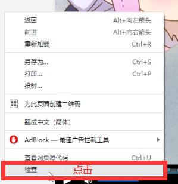
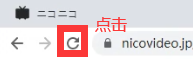
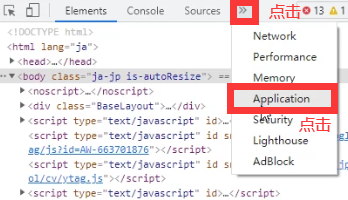
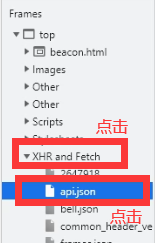
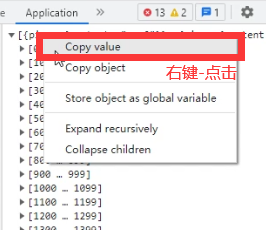
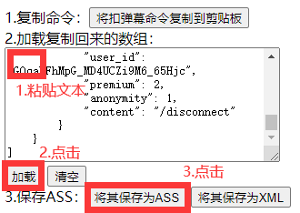

1.进入一个NICO生放送SO页面，在页面内“右键-检查”或F12呼出开发者工具窗口。

2.点击左上地址栏旁的“重新加载”，或者键盘“F5”刷新页面。（不刷新找不到以下的api.json）

3.弹出的窗口点击“更多-Application”。

4.点击“XHR and Fetch”展开，再点击“api.json”。

5.点击“右键-Copy value”复制该数组。

6.将数组粘贴回“nico-xml转ass页面”的文本框内，点击“加载”按钮，再点击“保存”。
